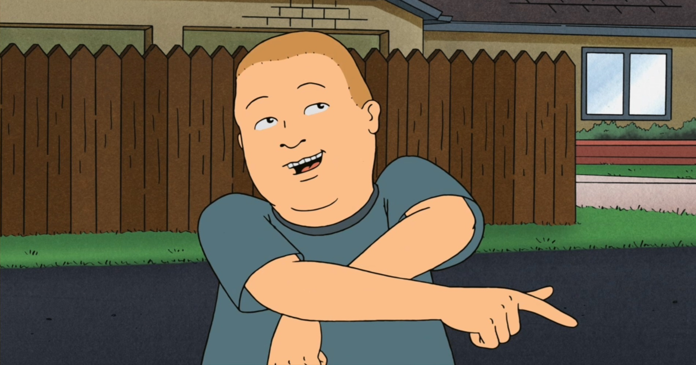
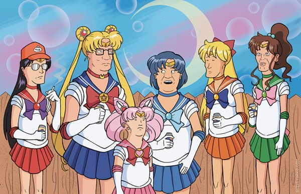
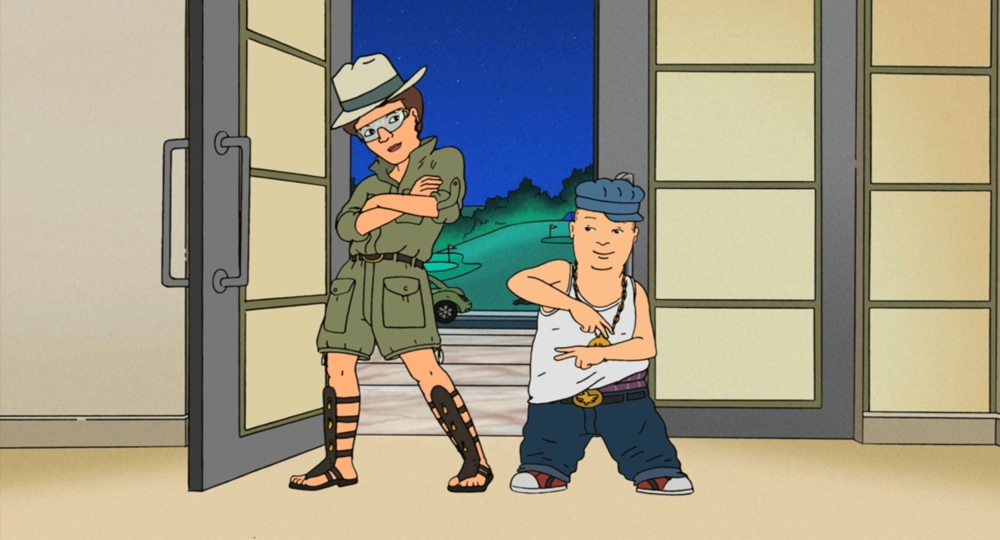

<section>
	<div class="table-photoreport">
		<h2>Фотоотчёт!<h2>
		<ul>
			<li class="photo photo-1" data-filter="photo-1"></li>
			<li class="photo photo-2" data-filter="photo-2"></li>
		</ul>
		<ul>
			<li class="photo photo-3" data-filter="photo-3"></li>
			<li class="photo photo-4" data-filter="photo-4"></li>
		</ul>
		<ul>
			<li class="photo photo-5" data-filter="photo-5"></li>
			<li class="photo photo-6" data-filter="photo-6"></li>
		</ul>
	</div>
</section>